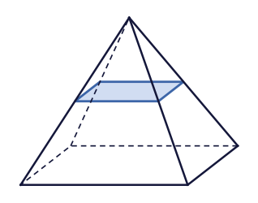

Ana is 5 ft tall and casts a 2-ft shadow. At the same time, a flagpole casts a 22-ft shadow. Write and solve a proportion for the flagpole's height, then find how much taller the flagpole is than Ana. Give the difference.MULTIPLE CHOICE
Priya has 6 shirts, 3 pairs of pants and 3 pairs of shoes. How many outfits are possible, and what is the probability that a random outfit uses one particular shirt? Give the number of outfits.MULTIPLE CHOICE
A figure is enlarged or reduced so that a 3-inch side becomes 1 inch. What is the scale factor?MULTIPLE CHOICE
Two sides of a triangle are 8 in. and 6 in. Which could be the length of the third side?MULTIPLE CHOICE
(A)7 in.
(B)2 in.
(C)15 in.
(D)14 in.
Two angles are complementary. One measures (3x + 11)° and the other (2x + 14)°. Find x, then find the measure of the larger angle.MULTIPLE CHOICE
A $117.50 jacket is on sale for 35% off. Sales tax of 6.25% is added to the sale price. What is the final cost, to the nearest cent?MULTIPLE CHOICE
(A)$76.38
(B)$83.72
(C)$124.84
(D)$81.15
The figure shows a square pyramid sliced by a plane parallel to its base. What shape is the cross-section?MULTIPLE CHOICE

(A)triangle
(B)square
(C)rectangle
(D)circle
A round table top has diameter 16 ft and a square table top has sides of 5 ft. Use 3.14 for π. How many more square feet is the round table top?MULTIPLE CHOICE
(A)25 ft²
(B)5 ft²
(C)200.96 ft²
(D)175.96 ft²
Random samples of 20 were taken from two populations. Number of push-ups done by students in two gym classes: the mean for Class A is 47 and the mean for Class B is 42. Each sample has a mean absolute deviation of about 5.
Which statement is best supported?MULTIPLE CHOICE
(A)The difference is large compared with the variability, so the populations likely differ.
(B)Any difference in the means proves every member of one group scores higher.
(C)No conclusion is possible, because the samples have different means.
(D)The difference is small compared with the variability, so the samples overlap a lot and the populations may not differ.
Are the events independent or dependent? Drawing two cards from a deck without replacing the first.MULTIPLE CHOICE
(A)independent
(B)dependent
(C)mutually exclusive
(D)impossible
A spinner lands on yellow with probability 5/17. In 170 spins, about how many times would you expect it to land on yellow?MULTIPLE CHOICE
Find x so that 3/8 = x/16, then find x + 2.MULTIPLE CHOICE
Select ALL problems that are matched with the correct answer.SELECT ALL THAT APPLY
A circle has circumference 29π ft. What is its radius? → 7 1/4 ft
A circle has circumference 33π ft. What is its radius? → 16 1/2 ft
A circle has circumference 11π ft. What is its radius? → 2 3/4 ft
A circle has circumference 30π ft. What is its radius? → 7 1/2 ft
A circle has circumference 39π ft. What is its radius? → 19 1/2 ft
A circle has circumference 32π ft. What is its radius? → 16 ft
Select ALL problems that are matched with the correct answer.SELECT ALL THAT APPLY
Two angles are supplementary. One measures 70°. What is the other? → 20°
Two lines intersect. One angle measures 146°. What is the measure of its vertical angle? → 136°
Two angles are complementary. One measures 16°. What is the other? → 74°
Two angles are supplementary. One measures 69°. What is the other? → 111°
Two lines intersect. One angle measures 42°. What is the measure of its vertical angle? → 42°
Two angles are supplementary. One measures 162°. What is the other? → 198°
Select ALL problems that are matched with the correct answer.SELECT ALL THAT APPLY
Solve the proportion: 8/5 = m/10 → m = 32
Solve the proportion: 9/x = 18/10 → x = 20
Solve the proportion: m/15 = 35/75 → m = 7
Solve the proportion: 8/9 = 60/n → n = 137/2
Solve the proportion: 7/11 = n/33 → n = 21
Solve the proportion: 5/14 = m/56 → m = 20
In 100 trials, the spinner landed on blue 80 times. Predict how many times it will happen in 1000 trials.SHORT ANSWER
Answer:
Find the surface area of a rectangular prism 12 cm long, 10 cm wide, and 8 cm high.SHORT ANSWER
Answer:
A cylinder-shaped tank has radius 2 ft and height 5 ft. Use 3.14 for π. Water fills it at 3 ft³ per minute. How many minutes does it take to fill, to the nearest tenth?SHORT ANSWER
Answer:
$5,000 is invested at 2% interest compounded once a year for 2 years. How much interest is earned? Round to the nearest cent.SHORT ANSWER
Answer:
A circular garden. A circular garden has a radius of 6 feet. A path 2 feet wide goes around it. Use 3.14 for π.CONSTRUCTED RESPONSE · 4 POINTS
(a) What is the area of the garden?
(b) What is the area of the path alone?
(c) Fencing goes around the outside edge of the path. How many feet of fencing are needed?
(d) On a scale drawing, 1 inch represents 4 feet. What is the diameter of the outside edge of the path on the drawing?